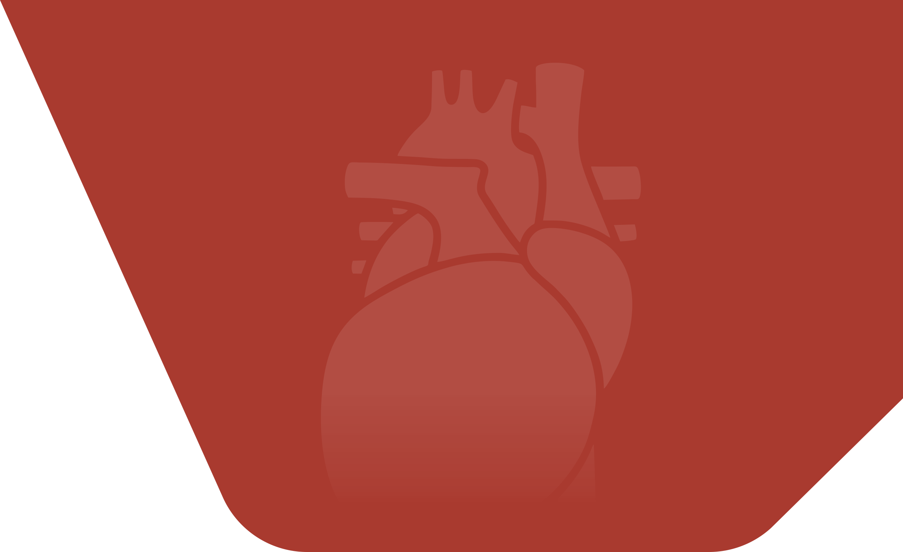

Nome do paciente
Histórico
Informações Pessoais
Informações: Nome:Fulano(a)x
Idade:X
Descrição do Funcionario: altura, cor de cabelo, cor dos olhos etc
Consultas marcadas:
Tipo de Consulta
15:30
Informações